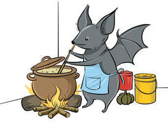
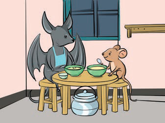

Speaking/signing practice
(d) Listen to/observe the instructions for playing the 'Simon Says' game.
Then, play the game as instructed.
Follow commands only when they begin with “Simon says.” If the leader gives a command without those words and a player follows it, that player is eliminated or loses a point.
Choose a leader called Simon. The leader gives commands such as “Simon says touch your nose” and “Simon says jump up and down.” Players follow those commands. If the leader says “Clap your hands” without “Simon says,” players who clap are eliminated.
Begin slowly with commands such as “Simon says stand up,” “Simon says touch your head,” and “Jump.” Increase the pace gradually and use different body movements. The last player remaining is the winner.
Questions
1. How is the Simon Says game played?
2. What other games do you know?
3. How is each of the games you have mentioned played?
(a) Study the following pictures and answer the following questions.


Questions
1. What creature is found in Picture 1?
2. What do you think the creature in Picture 1 is doing?
3. Why do you think the creature in Picture 1 is doing what it is doing?
4. What creatures are found in Picture 2?
5. What is happening in Picture 2?
6. What do you think about the two creatures in Picture 2?